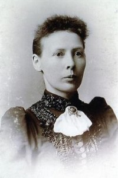

Bjørg Helene Hofstad
K, #24408, f. 15 november 1950, d. 18 desember 2018
Foreldre
Familie: Asbjørn Steinar Lian (f. 15 april 1949)
| Sønn | Henning Edvard Hofstad (f. 11 april 1975) |
Biografi
Bjørg Helene Hofstad ble født den 15 november 1950 Lierne, Nord-Trøndelag. Hun giftet seg med Asbjørn Steinar Lian sønn av
Arnold Lian og
Solveig Solli. Bjørg Helene Hofstad giftet seg med Ivar Bragstad. Hun døde i hjemmet den 18 desember 2018 på/i Spillum; Klinga, Namsos, Nord-Trøndelag.
Bjørg Helene Hofstad was also known as Bjørg Helene Lian. Hun was also known as Bjørg Helene Hofstad Bragstad. Bjørg og Ivar bodde Spillum; Klinga, Namsos, Nord-Trøndelag. Hun ble bisatt den 28 desember 2018 Klinga kirke, Namsos, Nord-Trøndelag.
| Sist redigert |
21 juli 2026 00:19:32 |
Johan Andreas Mikkelsen Oksdøl
M, #24412, f. 1811, d. 1865
Foreldre
Biografi
Johan bodde Oksdøl, Otterøy, Nord-Trøndelag, mellom 1835 og 1845. Johan bodde Tøtdal, Otterøy, Nord-Trøndelag, mellom 1845 og 1865.
| Sist redigert |
21 juli 2026 00:19:32 |
Alexander Mikal Johansen Tøtdal
M, #24413, f. 2 september 1833, d. 13 februar 1913
Foreldre
Biografi
Alexander Mikal Johansen Tøtdal was also known as Alexander Mikal Johansen Johnson. Han ble døpt den 31 mars 1834 Fosnes, Nord-Trøndelag. Alexander bodde Tøtdal, Otterøy, Nord-Trøndelag, i 1855. Alexander bodde Tøtdal, Otterøy, Nord-Trøndelag, i 1866. Han utvandret til Quebec, Canada, i 1866. Han innvandret til Lansing, Allamakee, Iowa, USA, i 1866. Alexander bodde The Johnson Homestead, Palmyra, Renville County, Minnesota, USA, i 1872. Alexander og
Susanna bodde Palmyra Township, Renville County, Minnesota, USA, i 1900.
| Sist redigert |
21 juli 2026 00:19:32 |
| Slektskap | 3-menning 5 ganger forskjøvet til Håkon Wahl |
Johanna Margrete Johansdatter Tøtdal
K, #24414, f. 3 november 1835, d. 2 oktober 1867
Foreldre
Biografi
Johanna Margrete Johansdatter Tøtdal ble født den 3 november 1835 Tøtdal, Otterøy, Nord-Trøndelag. Hun giftet seg med
Hans Anton Kristiansen sønn av
Kristen Jakobsen Tøtdal, den 2 september 1855. Hun døde under overfarten til USA ved fødselen til Jette den 2 oktober 1867 på/i Atlanterhavet.
| Sist redigert |
21 juli 2026 00:19:32 |
| Slektskap | 3-menning 5 ganger forskjøvet til Håkon Wahl |
Mikal Høier Petrus Johansen Tøtdal
M, #24415, f. 22 april 1838, d. 11 juni 1907
Foreldre
Biografi
Mikal Høier Petrus Johansen Tøtdal was also known as Mikal Petrus Johnsen. Han was also known as Michael H Johnson. Han ble født den 12 mai 1838. Han var gårdbruker Oksdøl, Otterøy, Nord-Trøndelag, mellom 1860 og 1868. Han innvandret til Lancing, Iowa, USA, i 1868. Hele familien utvandret pga uår hjemme i Norge. De kom til Lancing som sine søsken. Mikal bygde det første trehuset i området, hadde den første dampmaskinen og treskemaskinen og var uten tvil en dyktig farmer. Mikal bodde Stordon Township, Cottonwood County, Minnesota, USA, etter 1872.
| Sist redigert |
21 juli 2026 00:19:32 |
| Slektskap | 3-menning 5 ganger forskjøvet til Håkon Wahl |
Susanna Mathilde Mathiasdatter Skilleåsaunet
K, #24416, f. 7 mars 1833, d. 5 mai 1891
Foreldre
Biografi
Susanna Mathilde Mathiasdatter Skilleåsaunet was also known as Susanna Mathilde Tøtdal. Hun emigrerte til USA i 1867. Hun reiste med sine 3 barn, svigermor og svigerinnen med familie. Mannen hadde reist året før. På turen over Atlanteren levde de på medbrakt mat, mest tørt kjøtt og flatbrød. Hun og
Alexander bodde Palmyra Township, Renville County, Minnesota, USA, i 1900.
| Sist redigert |
21 juli 2026 00:19:32 |
| Slektskap | 3-menning 5 ganger forskjøvet til Håkon Wahl |
Hans Anton Kristiansen
M, #24417, f. 13 juli 1830, d. 6 januar 1916
Foreldre
Biografi
Hans Anton Kristiansen was also known as Hans Anton Christianson. Han var gårdbruker Tøtdal, Otterøy, Nord-Trøndelag, mellom 1855 og 1867. Han utvandret til USA i 1867 sammen med
Johanna Margrete Johansdatter Tøtdal. Bare Hans Anton og barna kom til Statene da Johanna døde under reisen. Hans bodde Allamakee, Iowa, USA. Han flyttet til Palmyra, Renville County, Minnesota, USA, i 1872. Han erved as township supervisor and treasurer of the school board. He was a charter member of Palmyra Lutheran Church and a signer of the church constitution. Services were held in his home before the church was built. Han giftet seg igjen med Tonetta Thorson.
| Sist redigert |
21 juli 2026 00:19:32 |
Jette Margrete Tøtdal
K, #24418, f. 17 november 1865, d. 19 februar 1906
Foreldre

Jetta Margarette S. Fosland
Biografi
Jette Margrete Tøtdal ble født den 17 november 1865 Atlanterhavet. under overfarten til USA, mora døde. Hun giftet seg med
Julius Sandberg Johansen Fosland sønn av
Johan Edvard Johansen og
Karen, den 4 juli 1896 USA. Jette Margrete Tøtdal døde den 19 februar 1906 USA. Hun ble gravlagt Palmyra Lutheran Cemetery, Hector, Renville County, Minnesota, USA.
Jette Margrete Tøtdal was also known as Jetta Margarette Christianson Fosland. Hun was also known as Judith Christensen.
| Sist redigert |
21 juli 2026 00:19:32 |
| Slektskap | 4-menning 4 ganger forskjøvet til Håkon Wahl |
Julius Martin Johnson
M, #24419, f. 13 desember 1855, d. 18 mai 1936
Foreldre
Biografi
Julius Martin Johnson ble født den 13 desember 1855 Tøtdal, Otterøy, Nord-Trøndelag. Han giftet seg med
Mary Tvedt. Han giftet seg med
Grethe Sofia Formo datter av
Hans Eliassen Formo og
Anne Nilsdatter Trøen, den 20 mars 1889 USA. Julius Martin Johnson døde den 18 mai 1936 Hector, Renville County, Minnesota, USA. Han ble gravlagt Palmyra Cemetery, Hector, Renville County, Minnesota, USA.
Julius Martin Johnson innvandret til Allamakee, Iowa, USA, i 1867 sammen med familien.
| Sist redigert |
21 juli 2026 00:19:32 |
| Slektskap | 4-menning 4 ganger forskjøvet til Håkon Wahl |
Mathias Justin Johnson
M, #24420, f. 25 oktober 1859, d. 18 mars 1940
Foreldre
Familie: Anne Tvedt (f. 11 oktober 1857, d. 21 mars 1897)
Biografi
Mathias Justin Johnson ble født den 25 oktober 1859 Tøtdal, Otterøy, Nord-Trøndelag. Han giftet seg med
Anne Tvedt i juni 1882 USA. Han døde den 18 mars 1940 Hector, Renville County, Minnesota, USA. Han ble gravlagt Palmyra Cemetery, Hector, Renville County, Minnesota, USA.
Mathias Justin Johnson innvandret til USA i 1867. Mathias bodde Hector, Renville County, Minnesota, USA, etter 1867. eget Homested. Han var aktiv i farmerorganisasjonene og nok en dyktig mann Hector, Renville County, Minnesota, USA, etter 1867. Han var farmer, startet med 80 acres - hadde ved sin død 700 acres.
| Sist redigert |
21 juli 2026 00:19:32 |
| Slektskap | 4-menning 4 ganger forskjøvet til Håkon Wahl |
Andrew Sandberg Johnson
M, #24421, f. 18 juli 1863
Foreldre
Biografi
Andrew Sandberg Johnson ble født den 18 juli 1863 Tøtdal, Otterøy, Nord-Trøndelag. Han giftet seg med
Annie Hatlestad i 1887 USA.
Andrew Sandberg Johnson ble døpt den 27 september 1863 Fosnes, Nord-Trøndelag. Han utvandret til USA i 1867. Han studerte ved St Olaf College på/i Minneapolis, Hennepin County, Minnesota, USA. Han var kull- og trelasthandler USA. Han var rektor Luverne, Minnesota, USA. Han og
Annie Hatlestad var nevnt i folketellingen i i 1920 Sioux Falls, Minnehaha County, South Dakota, USA. Han og
Annie bodde Minnehaha County, South Dakota, USA.
| Sist redigert |
21 juli 2026 00:19:32 |
| Slektskap | 4-menning 4 ganger forskjøvet til Håkon Wahl |
Anna Petrina Johnson
K, #24422, f. 29 april 1865, d. 19 desember 1925
Foreldre
Biografi
Anna Petrina Johnson ble født den 29 april 1865 Tøtdal, Otterøy, Nord-Trøndelag. Hun giftet seg med
Mathias Brudie i 1888 USA. Hun døde den 19 desember 1925 Thief River Falls, Minnesota, USA. Hun ble gravlagt Greenwood Cemetery, Thief River Falls, Pennington County, Minnesota, USA.
Anna Petrina Johnson was also known as Anna Petrina Brudie. Hun ble døpt den 3 juni 1865 Fosnes, Nord-Trøndelag. Hun innvandret til USA i 1867 sammen med familien.
| Sist redigert |
21 juli 2026 00:19:32 |
| Slektskap | 4-menning 4 ganger forskjøvet til Håkon Wahl |
John Adolph Johnson
M, #24423, f. 7 november 1869, d. 15 januar 1949
Foreldre
Biografi
John Adolph Johnson ble født den 7 november 1869 Iowa, USA. Han giftet seg med
Ingeborg Marie Rossum den 7 november 1896 USA. Han døde den 15 januar 1949 Renville County, Minnesota, USA. Han ble gravlagt Palmyra Lutheran Cemetery, Hector, Renville County, Minnesota, USA.
John Adolph Johnson flyttet til Palmyra, Hector, Renville County, Minnesota, USA, i 1872. Sammen med familien. Han var utdannet as one of the first graduates i 1891 ved Minnesota School of Agriculture. John bodde The Johnson Homestead, Palmyra, Renville County, Minnesota, USA. Han var en dyktig farmer og drev også med avl av Shorthornkveg The Johnson Homestead, Palmyra, Renville County, Minnesota, USA.
| Sist redigert |
21 juli 2026 00:19:32 |
| Slektskap | 4-menning 4 ganger forskjøvet til Håkon Wahl |
Mathilda Marithe Johnson
K, #24424, f. 20 mai 1873, d. 29 mai 1954
Foreldre
Biografi
Mathilda Marithe Johnson ble født den 20 mai 1873 Hector, Renville County, Minnesota, USA. Hun giftet seg med
Martin V. Evenson i 1894 USA. Hun giftet seg med
William K. Hoefer USA. Hun døde den 29 mai 1954. Hun ble gravlagt Greenwood Cemetery, Thief River Falls, Pennington County, Minnesota, USA.
Mathilda Marithe Johnson was also known as Thilda M. Evenson. Hun was also known as Thilda M. Hoefer. Hun og
Martin bodde Thief River Falls, Pennington County, Minnesota, USA.
| Sist redigert |
21 juli 2026 00:19:32 |
| Slektskap | 4-menning 4 ganger forskjøvet til Håkon Wahl |
Mary Tvedt
K, #24425, f. 1 mars 1861, d. 1 mai 1884
Biografi
Mary Tvedt was also known as Mary Johnson. Hun was also known as Bertha Marie Tvedt.
Burial record found in the original church records beginning in 1877 and writen Norwegian.
Grave location unknown.
| Sist redigert |
21 juli 2026 00:19:32 |
{kind=link}